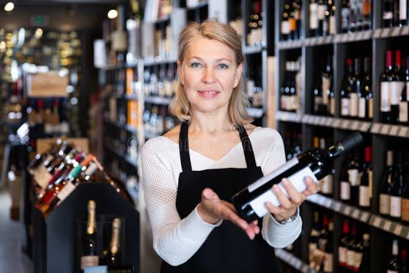

Há mais de 15 anos a Vinheria Agnello se destaca não só pela variedade de rótulos nacionais e internacionais, mas pelo conhecimento da nossa equipe. Giulio, Bianca e nossos vendedores são profundos conhecedores do mundo dos vinhos, e sempre orientam os clientes com dicas, recomendações e sugestões de harmonização. Agora você pode contar com essa mesma consultoria especializada também pelo site de forma totalmente gratuita.

Como funciona a nossa consultoria:
- Você entra em contato com a gente contando sua dúvida ou ocasião.
- Nossa equipe pergunta sobre suas preferências, o cardápio ou o momento em questão.
- Sugerimos os rótulos que mais combinam com o que você procura.
- Você decide com segurança qual será o melhor tipo para a ocasião.
Pra quem seria essa consultoria?
Sabemos que a maioria das pessoas que compram vinhos ainda estão descobrindo esse mundo, e que muitas vezes podem surgir diversas dúvidas na hora de escolher a garrafa certa. Por isso nossa consultoria é indicada para:
- Quem está começando a conhecer o universo dos vinhos e não sabe por onde começar.
- Quem vai receber visitas para um almoço e jantar e não deseja fazer a escolha errada.
- Quem está organizando uma comemoração ou evento e precisa de sugestões que agrade os convidados.
- Quem quer entender melhor sobre uvas e vinícolas.
Quer aprender mais sobre vinhos?
Confira também o guia da Salton sobre como degustar vinhos como um especialista.
Perguntas frequentes:
- Preciso entender de vinhos para participar?
- Não! A maior parte das pessoas que procuram por nossa consultoria está descobrindo o assunto aos poucos, é exatamente por esse motivo que ela existe.
- A consultoria tem algum custo?
- Não, a consultoria é gratuita, assim como na loja física.
- Posso pedir sugestões para acompanhar um prato específico?
- Sim. Conte o cardápio ou o tipo de refeição e nossa equipe recomenda a harmonização ideal.
Contato
Quer agendar sua consultoria gratuita? Entre em contato com a nossa equipe.
Fale com a nossa equipe